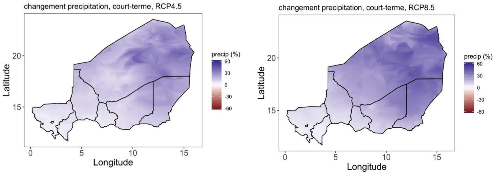
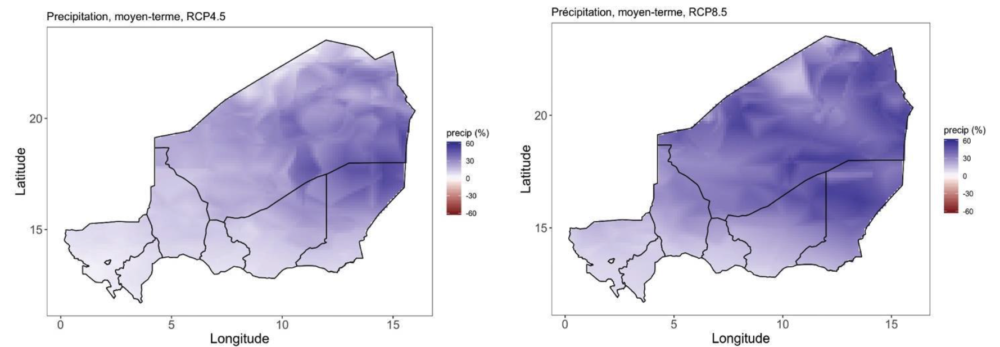
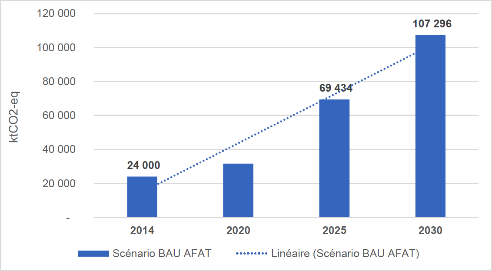
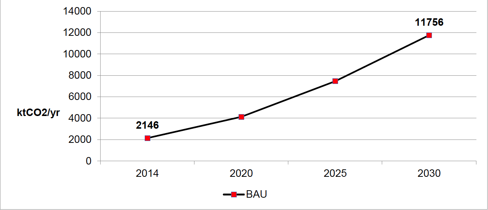
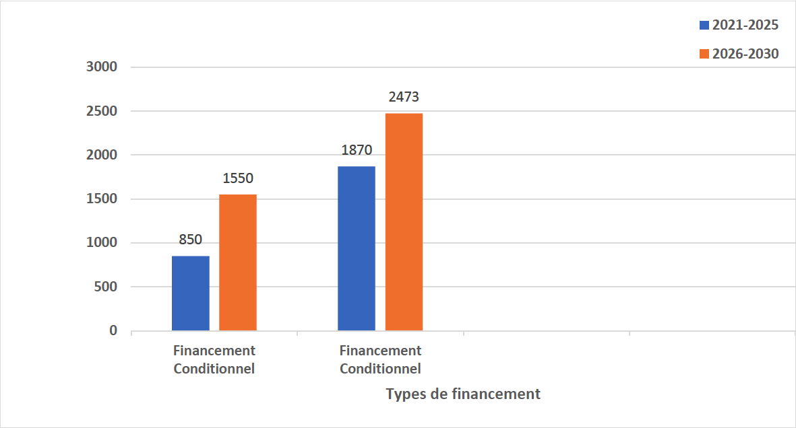

October 2021
|
AFOLU |
Agriculture, Forestry and other Land Use |
|
AIC |
Climate-Smart Agriculture |
|
IEA |
International Energy Agency |
|
BAU |
Business As Usual |
|
CAEP |
Climate Actions Enhancement Package |
|
CC |
Climate change |
|
ECOWAS |
Economic Community of West African States |
|
NDC |
Nationally Determined Contribution |
|
UNFCCC |
United Nations Framework Convention on Climate Change |
|
CNEDD |
National Environment Council for Sustainable Development |
|
CNI |
Initial National Communication |
|
CO2 |
Carbon Dioxide or Carbon Dioxide |
|
COP |
Conference of Parties |
|
CR AGHRYMET |
Regional Center for Training and Application in Agrometeorology and Operational Hydrology |
|
CS-GDT |
Strategic Framework for Sustainable Land Management |
|
DPNE |
National Electrification Policy Document |
|
EBT |
Technology Needs Assessment Project |
|
Ex-ACT |
Ex-Ante Carbon-balance Tool (software) |
|
FA |
Adaptation Fund for LDCs |
|
GEF |
Global Environment Facility |
|
FPMA |
Adaptation Program Fund for Smallholder Farmers |
|
FSC |
Strategic Climate Funds |
|
FTP |
Clean Technology Trust Funds |
|
GCF (GCF) |
Green Climate Fund |
|
GACMO |
The Greenhouse Gas Abatement Cost Model |
|
GDT |
Sustainable Land Management |
|
GHG |
Greenhouse Gases |
|
IPCC |
Intergovernmental Panel on Climate Change |
|
Gg eqCO2 |
Giga-grams carbon dioxide equivalent |
|
Gg eqCO2 |
Giga-grams carbon dioxide equivalent |
|
HCi3N |
Haut-Commissariat-Initiative “Nigerians Feeding Nigeriens” |
|
IGES |
Inventory of Greenhouse Gases |
|
INS |
National Institute of Statistics |
|
IRENA |
International Renewable Energy Agency |
|
I3N |
Initiative “Nigerians feed Nigeriens” |
|
CDM |
Clean Development Mechanism |
|
MESUDD |
Ministry of the Environment, Urban Sanitation and Sustainable Development |
|
ME/LCD |
Ministry of the Environment and the Fight against Desertification |
|
MNV |
Measurement, Notification, Verification (CDM, REDD…) |
|
MRV |
Measurement, Reporting, Verification |
|
MW |
Megawatt |
|
MWp |
Megawatt peak |
|
NAMA |
Nationally Appropriate Mitigation Actions |
|
NAMA |
Nationally Appropriate Mitigation Actions |
|
NDC-Partnership |
Nationally Determined Contributions |
|
SDGs |
Sustainable Development Goals |
|
NGO/AD |
Non-Governmental Organization/Development Association |
|
CSOs |
Civil Society Organizations |
|
NAPA |
National Adaptation Action Program |
|
PANEE |
National Action Plan for Energy Efficiency |
|
PANER |
National Action Plan for Renewable Energies |
|
PDAE |
Master Plan for Access to Electricity |
|
PDES |
Economic and Social Development Plan |
|
ESMP |
Environmental and Social Management Plan |
|
GDP |
Gross Domestic Product |
|
PIC-NDC |
Climate Investment Plan for the implementation of the NDC |
|
PIC-RS |
Climate Investment Plan for the Sahel Region |
|
LDCs |
Least Developed Countries |
|
NAP |
National Adaptation Plan |
|
PNED |
National Domestic Energy Program |
|
PNEDD |
National Environmental Plan for Sustainable Development |
|
PNEDD-2016 |
National Environment and Sustainable Development Policy (2016) |
|
UNDP |
United Nations Development Program |
|
PP |
Partnership plan |
|
PPCR |
Pilot Program for Climate Resilience |
|
GWP |
Global Warming Potential |
|
SPCR |
Strategic Program for Climate Resilience |
|
TFP |
Technical and Financial Partners |
|
QCN |
Fourth National Communication |
|
CPR |
Scenario 'Representative Concentration Pathway' |
|
RNA |
Assisted Natural Regeneration |
|
CNS |
Second National Communication |
|
SDDCI |
Sustainable Development and Inclusive Growth Strategy |
|
SDDEL |
Sustainable Livestock Development Strategy |
|
SNAE |
National Electricity Access Strategy |
|
SNCCC |
National Communication Strategy on Climate Change |
|
SNPA/CVC |
National Strategy and Action Plan on Climate Change and Variability |
|
SNT |
National Transport Strategy |
|
SPN2A |
National Strategy and Plan for Adaptation to Climate Change in the Agricultural Sector (2020-2035) |
|
HSE |
Monitoring-Evaluation System |
|
TCN |
Third National Communication |
|
LULUCF |
Land Use, Land Use Change and Forestry |
Niger's Nationally Determined Contribution (NDC) falls within the framework of the United Nations Framework Convention on Climate Change (UNFCCC) and the Paris Climate Agreement. It is aligned with national policies and strategies, in particular the SDDCI-Niger 2035, the PDES-2017-2021 as well as programs/projects for the sustainable management of natural resources and access to modern energy services for all on the horizon. 2030.
The NDC review process in Niger started in 2020 and provided for the submission of the revised NDC in 2021. Niger, as a member of the NDC Partnership since 2018, benefits from technical and financial support for the revision of its NDC through the CAEP Initiative and the UNDP Initiative “UNDP Climate Promise”. Revision of the document and its breakdown into implementation plans (Partnership and Climate Investment) and the Monitoring-Evaluation-SSE System, etc. are coordinated by the Ministry of the Environment and the Fight Against Desertification (ME/LCD) through the National Committee responsible for reviewing and strengthening the NDC created by Order No. 0155/ME/SU/DD /SG of August 31, 2020.
The ESS is made up of two components (Mitigation, Adaptation) of which the Adaptation component has been completed and is housed within the ME/LCD. The Mitigation component is being finalized.
The revision of the NDC made it possible to i) take stock of the implementation of the 2015 commitments, ii) raise Niger's ambitions in terms of adaptation and mitigation on the basis of new emissions estimates for key sectors (AFOLU and Energy) and on new climate projections. The reference year retained for the GHG assessment is 2014, also the reference year for the development of the QCN. Thus the country's overall emissions were around 28,777.299 GgCO2eq in 2014. The AFOLU and Energy sectors remain priorities for Niger with respective GHG emission levels of 23,952.674 GgCO2eq or 88.30% and 3,833.789 GgCO2eq or 9.30% of total emissions for the same QCN reference year.
Partners (World Bank, UNDP, FAO, IRENA, Belgium, AFD, FENU and Save The Children) are supporting Niger in this CAEP process as well as the IOM and the ILO.
The methodological approach chosen for this revision was intended to be participatory and inclusive with all stakeholders (Administration, research and training institutions, CSOs, private sector, TFPs). All the products of the various thematic studies delivered as part of the review were validated by the National Committee as they were developed.
The review of the NDC took place with a view to correcting the shortcomings noted in the 2015 NDC, such as the lack of an institutional framework that guarantees the operationalization and monitoring of the implementation of the objectives set, the communication system, sharing, appropriation at the national level as well as in the regions, the low level of mobilization of financial resources, in particular the unconditional part of the commitments, the plan for building the capacities of institutional actors and strengthening the partnership with TFPs.
The challenge of the revision process is to take charge of these shortcomings and to make the NDC the reference base for all the "Climate" interventions of Niger and of the actors not institutions, the solid and dynamic framework of governance which allows the planning, monitoring and evaluation of objectives and which lays the foundations for close collaboration between government institutions on the one hand, and other actors on the other (PTF, private sector, research institutions, CSOs).
At the end of this exercise, the revised NDC aims for 'unconditional' and 'conditional' reductions according to the BAU baseline scenario for:
the AFAT sector: Unconditional Reductions: 4.50% (BAU 2025) and 12.57% (BAU 2030) and Conditional Reductions: 14.60% (BAU-2025) and 22.75% (BAU 2030)
the Energy sector: Unconditional Reductions: 11.20% (BAU-2025) and 10.60% (BAU-2030) and Conditional Reductions: 48% (BAU-2025) and 45% (BAU-2030).
The implementation of Niger's Contribution is estimated, for the period 2021-2030, at a total cost of USD 9.9081 billion, of which for:
adaptation: 6.743 Billion USD of which 2.40 Billion USD (36%) in 'Unconditional' and 4.343 Billion USD (64%) in 'Conditional';
mitigation: 3.1647 billion of which 0.2127 billion USD (6.72%) in 'Unconditional' and 2.9524 billion USD (93.28%) in 'Conditional'
The total 'Unconditional' and 'Conditional' cost of the NDC amounts to 2.6127 Billion USD (26.4%) and 7.2954 Billion USD (73.60%) respectively.
The operationalization of the new NDC requires significant financial, technological and logistical resources as well as human capacity building provided that the support of the international community and Climate Finance is mobilized in order to enable the achievement of development objectives. economic and social, the NDC and the Paris Agreement.
The update of the NDC for the period 2021-2030 presents Niger's roadmap contributing to achieving the objective set by the Paris Climate Agreement, in particular maintaining the temperature rise below of 2oC or even 1.5oC by 2050.
The four National Communications produced by Niger (CNI-1990, SCN-2000, TCN-2008, QCN-2014), and the PANA and NAMA documents report on the measures taken with regard to GHG emissions and adaptation to the climate change.
As part of the implementation of the Paris Agreement, Niger has set itself the objective of contributing to the reduction of global greenhouse gas emissions (target 2°C or even 1.5°C by 2050) while pursuing its low-carbon socioeconomic development that is resilient to the adverse effects of climate change. Also, the NDC will be implemented to contribute to the following national development objectives:
Fight against poverty ;
Ensure the food and nutritional security of Nigeriens;
Promote the sustainable management of natural resources and the massive use of Renewable Energies;
Strengthen the resilience of ecosystems and communities.
The NDC is intended to be a strategic and engagement tool for Niger for the implementation of the Paris Agreement through targeted actions in priority sectors (AFOLU, Energy). This priority is confirmed by the national GHG inventories carried out on the occasion of the National Communications. Also, all studies have confirmed Niger's high exposure and vulnerability to climate change. Despite this situation, Niger intends to contribute to the global effort through its updated NDC through increased mitigation and adaptation measures with strong co-benefits in terms of carbon sequestration and reduction of GHG emissions.
This NDC aligns with national policies and strategies (SDDCI-2035, PDES, 2017-2021, i3N, CS-GDT, 2014-2029, SPN2A, SNPA-CVC, SNAE, SNT) with a view to initiating a transition to a low-carbon economy that is more resilient to the impacts of climate change. This is possible thanks to the adequate financial contributions of the Technical and Financial Partners mobilized through the financial mechanisms dedicated to the climate and in favor of the LDCs and the developing countries.
Since 2019, like the other countries that are parties to the United Nations Framework Convention on Climate Change, Niger has been revising and strengthening its NDC through the ''Climate Actions Enhancement Package'' (CAEP) initiative of the Partnership of Cdn. This revision is under the leadership of the ministry in charge of the environment. The latter is assisted in this task by the focal points of the AFOLU and Energy sectors, research and training institutions and civil society organizations federated by the national committee for the revision and strengthening of the NDC.
The revision of the NDC aims to capitalize on the achievements of the implementation of the first NDC and to fill in the gaps thanks to the multifaceted support of the member partners of NDC Partnership who are currently financing studies relating to governance and the implementation operational work of the CDN. The deliverables resulting from these studies were validated by two (2) bodies, namely the technical sub-committee and the National Committee in charge of reviewing and strengthening the NDC. The validated documents served as the basis for the formulation of the revised NDC which will be submitted to the UNFCCC by the Government of Niger as a prelude to the COP26 on Climate in November 2021 in Glasgow, Scotland.
Niger's strategy in this area is based on the inclusion in policies and strategies of the climate dimension and of national development priorities such as the fight against poverty, food and nutritional insecurity, the intensification of the penetration of new and renewable energies, and energy efficiency.
In addition, Niger has taken the option of taking into account in its policies, strategies and NDCs, the migration dimension, gender and social inclusion and African Initiatives related to the Climate, including that relating to Security, Stability and Sustainability (3S).
Also, the private sector in Niger undertakes to make investments to achieve the objectives of the NDC and the Paris Agreement through the effective operationalization of Corporate Social Responsibility (CSR) and in the Vision of SDDCI-Niger, 2035. To do this, the private sector opts for the capacity building of its members in terms of CC and climate finance, the promotion and popularization of innovative technologies in the service of climate action and working for mobilizing and accessing climate finance.
Finally, the NDC aligns itself with the common African option of negotiations on the Climate and financing of transnational programs structuring the resilience of populations and ecosystems (Climate Commission for the Sahel Region - 17 member countries).
|
National circumstances |
Population: 23.3 Million (80% rural, 20% urban), (INS, 2019). Population growth rate: 3.9% ( RGPH/2011 ). Low GDP, 12.9 billion USD in 2018, i.e. 553.65 USD/capita, Economic growth: +7.2%, ( World Bank, 2018 ). The agricultural sector provides 80% of income to the population. The agricultural sector is highly dependent on climatic hazards in Niger. The herd is estimated at 52,693,034 heads of all species, i.e. 20,876,240 TLU, ( DS/MAGEL2020 ) . Agriculture is the main sector of activity (69% of men and 31% of women) 36% of women own at least one plot of land (compared to 55% for men) ( UN-Women, 2017 ). CC will cause a change in the area of rainfed crops, a drop of 9 to 15% in grain yields of non-photoperiod millet, a drop of 18 to 23% in grain yields of sorghum, an increase of 21% to 25% grain yields of photoperiod millet, a 17% to 18% increase in grain yields of maize ( Lona et al., 2019 in SPN2A, 2020 ). |
|
Losses and damages: |
Average losses due to drought: more than 70 Million USD ( World Bank. Climate risk assessment, Niger, 2012 ). Flood damage over the period 1990-2020 estimated at 3,115,290 people and 7,100 localities affected with more than 225,000 houses destroyed and losses of approximately 205,000 hectares of crops and 46,540 UBT (SAP, 2021). |
|
Overall objective |
Niger has set itself the objective of contributing to the reduction of global greenhouse gas emissions (objective of 2°C or even 1.5 o C by 2050) while pursuing its socio-economic development that is low in carbon and resilient to the effects adverse effects of climate change. |
|
National objectives: |
|
|
Base year emissions: |
28,777.299 GgCO2eq (QCN-2014) including the AFAT Sector with 23,952.674 GgCO2eq (88.30%), Energy with 3,833.789 GgCO2eq (9.30%), Waste with 945.758 GgCO2eq (2.29%) and Industrial Processes and Product Use (PIUP) with 45.078 GgCO2eq (0.11%). |
|
Coverage and scope of the contribution: |
|
|
Contribution: |
|
|
Periods: 2021-2030 |
|
|
Reduction of GHG emissions by 2030: |
AFOLU
ENERGY
|
|
Mitigation measures for GHG emissions by 2030: |
AFOLU (Agriculture, Forestry and Other Land Uses):
Energy :
|
|
Implementation process: |
|
|
Assumptions and methodology: |
|
|
Climate Change Adaptation Measures: |
|
|
Financing needs over 10 years, for the period 2021-2030: |
Total cost of the NDC over 10 years: 9.9077 Billion USD (990.77 million USD/year), of which:
|
|
Ambitious and fair character: |
|
Niger is a country in West Africa which is characterized by particularly drastic climatic conditions due to the fact that 2/3 of its surface area (1,267,000 km²) is located in the Saharan zone and 1/3 in the Sudanian zone and sahelian. It is dependent on climatic hazards with rainfall with significant interannual, spatial and temporal variability. Its population is estimated in 2015 at 17.7 million inhabitants, for a population growth rate (3.9%/year) (INS, 2015) and 23.3 million inhabitants in 2019, most of which draw their income exploitation of natural resources (MP, 2020a). Thus, in 2019 young people represent 51.6% under the age of 15. The synthetic fertility index which reflects the average number of children born alive per woman (15-49 years old) is 7.6 for the same year.
The GDP is low (12.9 billion USD in 2018), or 553.65 USD/capita. and economic growth of +7.2%, [World Bank, 2018]. This GDP was 6.3 billion USD in 2015, or 413 USD/capita, with an HDI of 0.374 (UNDP, 2016). The production of the primary sector is dominated by the agro-sylvo-pastoral sector with 37% of GDP and 80% of jobs (INS, 2018) varies a lot from one year to another.
Like other West African countries, Niger is very vulnerable to climate change, characterized by high climatic variability and rainfall that leads to recurrent rainfall deficits. These deficits result in very harmful repetitive and cyclical droughts. The phenomena of desertification and the degradation of natural resources and land have been a major concern for the economic and social development of the country for decades. Faced with this situation, the State continues to develop initiatives and conduct actions likely to preserve the sustainability of the productive bases, as well as appropriate mitigation and adaptation strategies.
These disturbances of climate variability and change considerably increase food and nutritional insecurity, cause migration and the rural exodus of populations, conflicts between rural producers around the management and access to natural resources, disrupt the diets watercourses and the availability of water resources, reduce crop yield and production, increase the persistence of land conflicts, accentuate the intensity of climate-sensitive diseases, increase land degradation, etc.
Niger has submitted three NCs for the implementation of the United Nations Framework Convention on Climate Change (UNFCCC) and the Paris Climate Agreement. The fourth communication is being finalized.
The four national communications (CNI-1990, SCN-2000, TCN-2008 and QCN-2014) show a trend towards an increase in national GHG emissions, particularly in the two priority sectors, while maintaining the same proportion.
The values of Greenhouse Gas (GHG) emissions are summarized in the table below for the national communications (CNI-1990, SCN-2000 and TCN-2008, QCN-2014).
Table 1: Breakdown of emissions by sector according to National Communications
| Year/Annual emissions | Energy | Agriculture/Breeding | LULUCF | Industrial processes | Waste | Total (GgCO2eq) |
|
CNI-1990 |
928.47 |
1,839.55 |
6,106.26 |
9.56 |
28.22 |
9,000 |
|
SCN-2000 |
2,622 |
10,656 |
17,132 |
18 |
373 |
30,801 |
|
TCN-2008 |
1,766 |
12,675 |
21,010 |
34 |
415 |
35,900 |
|
QCN-2014 |
3,833.789 |
23,952.674 |
45,078 |
945,758 |
28777.299 |
|
Sources: (CNEDD, 2020)
The results of the GHG inventory for the QCN (reference year 2014) established the aggregate emissions/removals for direct CO2 gases: - 8,192.006GgCO2eq; CH4: 17585.35 GgCO2eq and N2O: 19,384.006 GgCO2eq. CO2 emissions are evaluated at 2,217.741 GgCO2eq against an absorption of -10,434.735 GgCO2eq, ie a CO2 sequestration capacity of around - 8,192.006 GgCO2eq. Hence, the overall emissions/removals of the main direct gases (CO2, CH4, N2O) estimated at 28,777.299 GgCO2eq.
By way of example for the reference year 2014, the breakdown of emissions between the different sectors is presented as follows:
Table 2: Breakdown of emissions by sector according to the Fourth National Communication (2014)
| Reference year (2014) | Emissions (GgCO2eq) | Share of emissions (%) |
|
AFOLU |
23,952.674 |
88.30 |
|
Energy |
3,833.789 |
9.30 |
|
Waste |
945,758 |
2.29 |
|
Industrial Processes and Product Use |
45,078 |
0.11 |
Sources: (CNEDD, 2020)
Niger's climate is of the semi-arid tropical type, characterized by two seasons: a dry season from October to May and a rainy season from June to September.
During the dry season, the average temperature varies between 18.1 and 33.1°C. The temperature records observed are – 2.4°C (observed on January 13, 1995 in Bilma) for minimum temperatures and 49.5°C (observed on September 7, 1978 in Diffa) for maximum temperatures (PANA, Niger 2006).
During the rainy season, the average temperature varies between 28.1 and 31.7°C. The rainfall regime is unimodal with maximum rainfall occurring around August. In a normal year, the rainfall allows groundwater recharge, the formation of water bodies and the development of plant cover.
Since the 1950s, Niger's climate has experienced 3 distinct rainfall cycles, common to the entire Sahel:
between the 1950s and 1970s, Niger benefited from a cycle of wet years;
between the 1970s and 1990s, Niger was faced with a cycle of major droughts, marked by particularly dry episodes in 1970 and 1984, as in the rest of the Sahel;
from the beginning of the 1990s, much better rainfall conditions returned to this region (Ali et al., 2008, 2010), accompanied however by an increase in the interannual variability of rainfall.
In view of this situation, Niger is faced with extreme climatic hazards which are becoming more frequent and violent (recurrent and successive droughts, floods, violent winds, extreme temperatures and sand or dust storms; the variability of rains s increase and its poor distribution in time and space; the persistence of other indirect factors such as epidemics (meningitis, cholera), crop enemies (miner caterpillars, flower insects, aphids, seed-eating birds), diseases for livestock (epizootics), bush fires, etc.
Figure 1 below represents the simulated evolution of the average accumulations of precipitation during the rainy season (JJAS) over the short term (top) and the medium term (bottom), for the RCP4.5 scenarios (at left) and RCP 8.5 (right).
The models predict a general upward trend in cumulative precipitation during the rainy season (JJAS) compared to the 1981-2010 climatological reference.
These conclusions are consistent with the trends obtained by different authors.
According to the models, the increase in rainfall should be greater in the North and East of the country. The increase in rainfall should be greater in the medium term compared to the short term, and all the more so in a pessimistic scenario of an increase in greenhouse gases (RCP 8.5 compared to RCP 4.5 ).


Figure 1: Simulation of the evolution of the average accumulations of precipitation during the rainy season (JJAS) for the short and medium term, compared to the reference period 1981-2010. These results are the median of the simulations carried out with 29 models models of the Global Model Intercomparison Experiment (CMIP5) for the RCP 4.5 and RCP 8.5. The values represented correspond to the percentage of variation compared to the reference precipitation accumulations.
Source: MESUDD, 2020
4. Temperature evolution trends
Figure 2 below represents the simulated evolution of temperatures during the rainy season (JJAS) over the short term (top) and the medium term (bottom) for the RCP 4.5 (left) and RCP 8.5 scenarios ( to the right).
The models predict temperature increases during the rainy season (JJAS) in all localities in Niger of around 1°C in the short term (horizon 2030), against 1.5 to 3°C in the medium term ( horizon 2050).
The increase in projected average temperatures is significantly greater in the RCP 8.5 scenario than in the RCP 4.5 scenario, which is logical.
Models indicate slightly larger mean surface temperature increases in the northernmost regions, compared to southern and western Niger.
The conclusions obtained are consistent with the trends already noted by several authors.
Figure 2 : Average surface temperature differences in Niger during the rainy season (JJAS), simulated over the short and medium term compared to the reference period 1981-2010. These results are the median of the simulations carried out with 29 global models from the Global Model Intercomparison Experiment (CMIP5) for RCP 4.5 and RCP 8.5.
Source: MESUDD, 2020
The models tend to show a trend towards a decrease in the number of rainy days during the JJAS period over the whole of Niger. The decrease in the number of rainy days is greater in the medium term compared to the short term, but similar between the RCP 4.5 and 8.5 scenarios.
In Niger, the combination of an increase in total rainfall (Figure 2) and a decrease in the number of rainy days over the JJAS season (Figures 1) indicates a trend towards intensification of rainfall and increased rainfall. the duration of dry spells during the agricultural season.
The national economy is essentially based on the agro-sylvo-pastoral and fisheries sector, which remains the main source of employment and income for more than 80% of the population. However, this sector remains dependent on the vagaries of the weather.
In terms of impact on agriculture, attacks by the desert locust and other crop pests have damaged more than 1.6 million hectares. The hazards (drought, bush fires, floods) together account for more than 1 million hectares. More than 17 million head of cattle also perished during the events between 2001 and 2014. Economic impacts, droughts and floods contributed 96% of economic losses. The values of the damages and losses caused to the agriculture and housing sectors exceed USD 3.2 billion (PNUD, 2017 in CNEDD, 2020).
Future climate change will lead to a 10 to 20% decrease in yields of most rainfed crops by 2050, compared to the year 2020 (MESUDD/SPN2A, 2020).
The most recent simulations show that CC should cause by 2050, compared to average yields over the period 1981-2010: a drop of 9 to 15% in non-photoperiod millet grain yields; a drop of 18 to 23% in grain yields of sorghum; a 21 to 25% increase in photoperiod millet grain yields and a 17 to 18% increase in maize grain yields (MESUDD/SPN2A, 2020).
All these extreme climatic events constitute an obstacle to achieving the objectives of the fight against poverty and for economic and social development as set out in policies and strategies (SDDCI-2035, PDES, 3N Initiative, PNEDD-2016, SPN2A , etc.). This situation constitutes a major challenge to be met.
Niger's GHG emissions are 28,777.299 GgCO2eq. (QCN-2014) and only 0.0001% of global CO2 emissions. Niger does not belong to Annex I of the UNFCCC, therefore has no quantified obligation in terms of mitigation. However, despite its significant needs to develop its economy and the need to lift a large part of its population out of poverty, Niger's ambition is to limit its emissions to 1.61tCO2eq/capita. by 2030, within the framework of the conditional objective. The NDC is fair with regard to national capacities, population growth, Niger's geographical location and the aridity of its climate, and the degree of vulnerability of its economy, which depends on rainfall.
Niger continues, despite this period of the COVID-19 pandemic and these decades marked by insecurity in the Sahara and Sahel area and the displacement of populations, to apply measures to adapt and fight against the effects harmful effects of climate change. This situation annihilates the efforts of the Government and slows down socio-economic activities in the country.
Despite Niger's situation of vulnerability and its membership of the group of LDCs, the NDC provides for a reduction in GHG emissions during the period 2021-2030 in the two sectors (AFOLU, Energy) following the projections of emissions projected for the BAU- 2025 and BAU-2030 and according to a baseline scenario based on assumptions. Mitigation measures are divided into unconditional and conditional contributions.
Adaptation is essential for the country. To participate in the mitigation efforts of the international community, Niger favors adaptation actions with strong co-benefits in favor of mitigation.
Mitigation in the Energy sector requires significant investments to facilitate access to cheap, sustainable and clean energy.
While mobilizing its national resources, Niger wishes to use International Climate Finance and other international financial mechanisms and benefit from the support of international cooperation to achieve the objectives.
2.1. Reference scenario
2.1.1. AFAT sector
The BAU scenario of the AFOLU sector was defined through the EX-ACT tool (EX-Ante Carbon-balance Tool) of the FAO taking into account the current development trends of the AFOLU sector and future human activities.
The results show that without co-benefit adaptation measures, emissions, which were estimated at 24,000 ktCO2-eq in 2014, will increase to 69,434 ktCO2-eq in 2025 and to 107,296 ktCO2-eq in 2030, as shown in the picture 3.

Figure 3: Trend in AFOLU sector emissions over the period 2014-2030
2.1.2. Energy Sector
The BAU scenario was defined through the tool "The Greenhouse Gas Abatement Cost Model (GACMO)" based on the energy balance of the reference year of the 2014 GHG inventory, population growth, of the GDP, of the energy demand of the various sectors of activity and of the emissions of the Energy sector. The results of the BAU scenario over the period 2014-2030 show an upward trend in emissions. Indeed, the sector's CO2 emissions estimated at 2,146 ktCO2 in 2014 will increase to 7,454 ktCO2 in 2025 and 11,756 ktCO2 in 2030. As shown in Figure 4, “without mitigation measures”, the development trajectory of the sector would be a source of GHG emissions.

Figure 4: Trend in emissions from the energy sector over the period 2014-2030
2.2. Reduction measures
2.2.1. AFAT sector
The identified technologies are co-benefit measures. Overall, their implementation is the subject of ongoing or planned projects/programmes. Thus are retained for the revised NDC: Plantations of multipurpose species: 750,000; Promotion of assisted natural regeneration (ANR): 913,932 ha; Development of land for irrigated or flood-recession crops: 424,000 ha; Live hedges and windbreaks: 145,000 km; Development and securing of pastoral enclaves, grazing areas and rest areas: 455,848 ha; Development and materialization and corridors: 279,702 ha; Restoration of degraded pastoral land: 112,500 ha; Private forestry: 75,000 ha: development of zero-grazing dairy farms (permanent stalling): 258 farms; intensification of livestock systems based on cattle fattening: 1,500 farms; intensification of breeding systems based on sheep fattening: 3,000 farms; “One village, one wood” programme: 12,500 ha; Fixation of live dunes: 10,053 ha; Rehabilitation of degraded classified forests: 10,000 ha; Input management: 10,822 tonnes; Fight against deforestation (clearing) and bush fires (firewall): 7,500 ha; Fodder crop: 2,000 ha. Implemented over an area of 4,838,899.5 Fight against deforestation (clearing) and bush fires (firewall): 7,500 ha; Fodder crop: 2,000 ha. Implemented over an area of 4,838,899.5 Fight against deforestation (clearing) and bush fires (firewall): 7,500 ha; Fodder crop: 2,000 ha. Implemented over an area of 4,838,899.5 ha (i.e. 4% of the country's surface area), these technologies will enable Niger to sequester 4.2 tonnes of CO2-eq/ha/year.
2.2.2. Energy Sector
The unconditional and conditional mitigation options in the Energy sector relate to the proportion of energy efficiency in the residential and tertiary sectors; the reduction of electricity transmission and distribution losses; the development of renewable energies and the improvement of energy efficiency in the transport sector. The targets selected are listed in Table 3.
Table 3 : Unconditional and conditional mitigation measures and technologies in the Energy sector
| Reduction measures | Technologies | Units | Conditional targets for 2030 | Unconditional targets for 2030 |
|
Promotion of energy efficiency in the residential and tertiary sectors |
Efficient lighting with compact fluorescent bulbs |
Lamps |
841,000 |
250,000 |
|
Efficient lighting with LEDs |
Lamps |
295,000 |
88,000 |
|
|
Efficient wood-burning fireplaces |
fireplaces |
942,000 |
300,000 |
|
|
Efficient Charcoal Stoves |
fireplaces |
520,000 |
140,000 |
|
|
LPG fireplaces |
fireplaces |
520,000 |
500 00 |
|
|
Office lighting efficient with compact fluorescent bulbs |
Lamps |
253,000 |
80,000 |
|
|
Efficient office lighting with LEDs |
Lamps |
310,000 |
90,000 |
|
|
Efficient public lighting |
Lamps |
140,000 |
70,000 |
|
|
LED solar lights |
Lamps |
71,000 |
40,000 |
|
|
Efficient refrigerators |
Refrigerators |
283 000 |
113,000 |
|
|
Efficient Hotel Refrigerators |
Refrigerators |
71 000 |
15,000 |
|
|
Solar Street Lights |
Lamps |
40,000 |
8,000 |
|
|
Reduction of electricity transmission and distribution losses |
New high-efficiency coal-fired power plant |
MW |
200 |
0 |
|
Efficient electrical networks (losses avoided) |
GWh |
52 |
0 |
|
|
Development of renewable energies |
Hydroelectricity connected to the main network |
MW |
130 |
0 |
|
Electricity production from bagasse |
MW |
12 |
0 |
|
|
Solar PV, large grid |
MWp |
402 |
0 |
|
|
Solar/diesel mini-grid |
MWp |
24 |
0 |
|
|
Solar PV, small isolated grid, 100% solar |
MWp |
100 |
0 |
|
|
Wind turbine |
MW |
50 |
0 |
|
|
Improving energy efficiency in the transport sector |
More efficient gasoline cars |
Cars |
0 |
8000 |
|
More efficient diesel cars |
Cars |
0 |
5000 |
|
|
Restriction on the import of used cars |
Cars |
0 |
35,000 |
The impact of these measures on the reduction of emissions was assessed using the GACMO tool. The results show a significant reduction in emissions from the sector. Indeed, without the measures, emissions will drop to 11,766 ktCO2 in 2030 and with the measures, these emissions will be 6,432 ktCO2, i.e. a reduction of 5,324 ktCO2. Figure 5 below shows the impact of the reduction measures (Unconditional and Conditional) compared to BAU-2025 and BAU-2030.

Figure 5: “Unconditional” and “conditional” reduction compared to BAU (2025-2030)
The vulnerability assessment of the AFOLU and Energy sectors has identified the following adaptation options: i) Promotion of Climate-Smart Agriculture; ii) Valuation of meteorological data by producers; iii) Development of sustainable land and water management; iv) Strengthening participatory and digitized management of forest areas; v) Development and implementation of a ten-year reforestation plan; vi) Development of urban and peri-urban forestry; vii) Subsidies for kits for the use of fossil and solar energies; and viii) Development of Public Private Partnership (PPP) for the development of new and renewable energies.
Adaptation measures in the AFOLU sector focus on improving the resilience of the agriculture, livestock, forestry, water resources, fisheries and wildlife sub-sectors as well as the health of populations. . Indeed, emphasis is placed on the promotion of AIC techniques taking into account the enhancement of climate information, early warning, risk and disaster management, gender and social inclusion, climate-based agricultural index insurance and the integration of the “climate change” dimension into local, regional and national planning.
The mitigation measures planned, in the AFOLU sector, relate to the scaling up of good practices for sustainable land management (SLM) and water in all agro-ecological zones in order to increase the resilience of ecosystems and households, and to sequester carbon.
For the Energy sector, the measures aim to facilitate access to cheap, sustainable and clean energy as well as access to modern energy services for all in 2030. The mitigation options concern the management of the sub- 'Residential' sector (households), through rural electrification, the saving of wood energy and its substitution by other more modern fuels (butane gas, biofuels, solar); the 'Transport' sub-sector by the drop in its specific consumption; the management of the 'Demand, Transformation and Popularization of Renewable Energies' sectors by improving the energy efficiency of the sectors and the promotion of photovoltaic solar energy for water pumping, health and electrification.
Table 4 below reflects the impacts and vulnerabilities in the AFOLU sub-sectors on the one hand and the adaptation measures to deal with these impacts on the other.
Table 4 : Impacts and adaptation measures in AFOLU sub-sectors
| Subsectors | Impacts and vulnerabilities | Measures and actions |
|
Agriculture |
|
|
|
Forestry |
|
|
|
Breeding |
|
|
|
Water resources |
|
|
(ME/LCD, 2021)
The intersectoral implementation of the NDC requires the mobilization of state actors from sectoral ministries and research and training institutions including public universities, the private sector and CSOs.
The implementation of the NDC also requires a mode of governance ensuring the functions of orientation/decisions, steering, consultation and implementation. This governance will be based on a solid leadership of communication, exchanges as well as the involvement and adhesion of the stakeholders raised. It is essential to create a good institutional synergy and the appropriation of the process by all the actors.
The Permanent Secretariat (SP), executive body for the implementation of the NDC, ensures coordination and is endowed with qualified human and adequate material resources and management autonomy. It will be specifically responsible for coordinating and monitoring the implementation of the NDC with well-defined missions and attributions to avoid any conflict of competence with the other structures. The implementation of NDC activities will fall under the competence of the sectoral administrations concerned, the NGOs/DAs and the private sector.
A steering committee will be set up to provide guidance to the PS in implementing the decisions. The NDC implementation monitoring committee as it currently exists in its composition (sectoral administrations, research and training, CSOs, private sector, TFPs) will continue its missions.
The overall amount (unconditional and conditional investment) for implementing the identified mitigation technologies is estimated at USD 3.1651 billion for the period 2021-2030 in two five-year phases.
Indeed, the costs of the unconditional and conditional options are evaluated respectively at 0.2127 billion USD or 6.72% and 2.9524 billion USD or 93.28%.
The summary of these costs is contained in Figure 6 and Table 5 below.

Figure 6: Funding flow by NDC implementation phase in the Energy sector
Table 5: Mitigation financing cost
| Energy | Reduction | Funding (USD billion) | ||
| BAU 2025 | BAU 2030 | 2021-2025 | 2026-2030 | |
|
Unconditional |
11.2% |
10.6% |
0.0409 |
0.1718 |
|
Conditional |
48% |
45% |
0.8919 |
2.0605 |
|
Total financing |
0.9328 |
2.2323 |
||
The overall amount (unconditional and conditional investment) for implementing the identified adaptation technologies is estimated at USD 6.743 billion for the period 2021-2030 in two five-year phases.
Indeed, the costs of the unconditional and conditional options are evaluated respectively at 2.40 billion USD (36%) and 4.343 billion USD (64%).
The summary of these costs is contained in Figure 7 and Table 6 below.

Figure 7: Funding flow by NDC implementation phase in the AFOLU sector
Table 6: Cost of financing adaptation
| AFOLU | Reduction | Funding (USD billion) | ||
| BAU 2025 | BAU 2030 | 2021-2025 | 2026-2030 | |
|
Unconditional Scenario |
4.5% |
12.57% |
0.85 |
1.55 |
|
Conditional Scenario |
14.6% |
22.75% |
1.87 |
2,473 |
|
Total financing |
2.72 |
4,023 |
||
A monitoring and evaluation mechanism for the NDC has been put in place to monitor performance indicators and Niger's efforts in terms of adaptation and mitigation within the framework of the implementation of the Paris Agreement. Regular monitoring and annual evaluations will be carried out for necessary adjustments taking into account relevant and objectively verifiable indicators. The monitoring-evaluation will be carried out by a Permanent Secretariat housed at the ME/LCD and will be done in a participatory manner with all the representatives of the orientation body in charge of the implementation of the NDC. Monitoring-evaluation will focus on the dual plan of physical and financial achievements.
The monitoring-evaluation mechanism of the NDC provides for two types of monitoring, namely: the monitoring of execution which will use the data from the activity reports of the national structures and partners, and the preparation of the activity reports of the Permanent Secretariat; impact monitoring will be based on performance indicators at two levels (national, local) and in both internal and external forms.
Also, the MRV ( Measurable, Reporting and Verifiable ) system constitutes a “ vector of trust between countries, by transparently exposing their mitigation actions as well as the financing obligations of developed countries ”. As soon as the MVR system is developed and adopted by Niger, it is important to build the capacities of the key players in the implementation of the NDC.
The NDC contributes to achieving the SDGs and Niger's economic and social development objective through its policies and strategies. Achieving this objective involves taking into account or implementing the main elements of the various support action plans and the NDC's Climate governance tools during its period. It is :
Capacity building of stakeholders and institutions implementing the NDC;
Pre-feasibility/feasibility studies and the development of projects and programs in the Energy sector;
Development of project/programme documents;
Ownership by the partners of the Partnership Plan (PP);
Development of Public Private Partnership (PPP) for the development of new and renewable energy projects;
Development of Concept Notes for Projects/Programs for mitigation and adaptation;
Development of the NDC Climate Investment Plan;
Transfer of appropriate technologies;
Finalization of the NDC monitoring-evaluation system;
Registration system and MRV procedures;
Establishment of NDC Governance bodies (execution, steering and orientation, monitoring, etc.);
Implementation of a Communication and Climate Change Strategy;
Adoption of the NDC Implementation Roadmap;
Organization of national data and information collection structures, and mobilization of the means necessary for conducting a GHG inventory, storing data, archiving and creating a database. The IGES will take into account new gases used in Niger and having a high GWP, in compliance with Niger's commitments to other Multilateral Environmental Agreements.
The national MRV (Measurement, Reporting and Verification) system is essential for measuring progress in implementing the NDC, particularly for mitigation measures. The MRV system will mark Niger's desire to work transparently with partners.
Priority technology transfer needs are identified as part of the project "Technology Needs Assessment (TNA)" and a portfolio of projects and programs has been identified to address the adverse effects of CC through the transfer and access to clean technologies. Technology transfer is indeed about adaptation and mitigation.
Niger is counting on international cooperation to mobilize sufficient financial resources to achieve the objectives of the NDC. The resources that can be mobilized at the national level are limited and insufficient, hence Niger's strong interest in accessing the Climate Funds. For this, it is therefore important to build the capacity of actors to facilitate access to financial mechanisms and resources to promote the implementation of the NDC. The resource mobilization strategy will be based on the following axes: the strengthening of the existing partnership network, the design of decision-making tools, the development of advocacy actions, the diversification of funding sources and the promotion of funding opportunities.
The Climate Investment Plan for the implementation of the NDC will concern all the adaptation and mitigation projects/programs identified or decided by the promoters and the Government.
In addition, it is necessary to raise the awareness of actors on the issues of the NDC at all levels, but also to identify and mobilize the sources of financial mechanisms to face the challenges of the implementation of the NDC and the economic and social development of Niger. Already, the following sources of financing could be mobilised: the Green Climate Fund, the Adaptation Fund for LDCs, the Strategic Climate Funds (SCF), the Funds of the adaptation program for small farmers, the GEF's "Small Grants Program (SGP)", Trust Funds for Clean Technologies, etc.
Also, climate governance in Niger is marked by the strong political will for the implementation of the Paris Agreement, the strengthening of local governance, the integration of gender and inclusion, CC issues in the national policies and strategies, the implementation of the Climate Investment Plan for the Sahel Region and its Priority Program to Catalyze Climate Investments in the Sahel.
Finally, the commitments of the partners announced for the financing of the NDC open up prospects for the mobilization of financing and the development of 'bankable' structuring projects for Niger and the Sahel region and the ECOWAS zone.
Niger has started a process of developing concept notes and pre-feasibility/feasibility and cost-benefit studies for projects and programs in the areas of Agriculture, Environment, Water Resources, Energy, Health, Transport and Equipment, Livestock, GGW, etc. These initiatives will be submitted to international climate financing mechanisms, including the Green Climate Fund (GCF).
These projects and programs come under the two priority sectors AFAT and Energy and are included in the Partnership Plan and the Climate Investment Plan of the NDC, for which financial resources must be mobilized as part of the operationalization of the NDC. Some projects are already funded by the GCF for the next few years.
AFOLU sector projects concern the sustainable management of natural resources (land, forestry, pastoral, water). Energy sector projects are those of the Roadmap for the electricity sub-sector up to 2035, including power plants decided or planned by the Government and new other options to be selected by the model.
All these projects and programs contribute to both adaptation and mitigation for the resilience of communities and ecosystems.
The revision and submission of the NDC before COP-26 in Glasgow reflects the will of the Government of Niger to honor its commitments vis-à-vis the Convention and the Paris Agreement with a view to contributing to the reduction limiting the rise in global temperature to 2°C or even 1.5°C
This update of GHG mitigation and CC adaptation objectives and measures as well as funding for priority sectors (AFOLU, Energy) are determined for the 2021-2030 period in order to enable all national parties to prepare for human, institutional and logistical capacity building actions, reassess all investment projects and programs. This update took into account the Climate governance tools of the revised NDC including the Roadmap for its implementation, the Resource Mobilization Strategy, the MRV System, the Monitoring and Evaluation System, the Communication Strategy and CC, the NDC Climate Investment Plan and the establishment of the database on the national GHG inventory.
The new proposed objectives align with Niger's strategic and political frameworks: SDDCI-Niger 2035, PDES, I3N, SPN2A, DPNE, SNPA/CVC, PNCC, PNEDD-2016, SNT, etc.
The implementation of the mitigation and adaptation technologies identified respectively in the Energy and AFOLU sectors will contribute to the achievement of these new objectives for the period 2021-2030 and will require a total investment of 9.9081 billion USD of which 2, USD 6127 billion (Unconditional scenario) or 26.37% supported by the State, and USD 7.2954 billion (Conditional scenario) or 73.63% to be mobilized from TFPs and International Climate Finance.
Through the implementation of the Contribution, Niger will contribute to the achievement of the objective of the Paris Agreement consisting in "intensifying the planetary response to the threat of climate change by maintaining the increase in global temperature well below 2°C, and to make even greater efforts to limit this rise to 1.5°C above pre-industrial levels”.
Also, the revision of the NDC is an opportunity to intensify the mobilization of partners and resources for the implementation of the Roadmap and the Climate Investment Plan to finance investment projects and programs to reverse the trend of climate change on the one hand, and on the other hand to allow the valiant populations and ecosystems of Niger to be more resilient to the climate.
In addition, Niger has taken into account the gender dimension and inclusion and fully involved the private sector throughout the process of reviewing, planning and implementing the Contribution.
ME/LCD, AFOLU Sector Action Plan and Roadmap, June 2021
ME/LCD, Final report: “Development of mini-inventories of GHG emissions and projections to support the preparation of new targets”, activity A-575, CAEP-IRENA, 2021
ME/LCD, Final report: “Strengthening the mechanism for monitoring the implementation of NDCs”, Activity A-591CAEP-IRENA, July 2021
ME/LCD, Vulnerability Assessment of the Agriculture, Forestry and other Land Use (AFOLU) and Energy sectors, June 2021
ME/LCD, Update of the objectives of the Nationally Determined Contribution (NDC) and its alignment with new sectoral and national policies, June 2021
ME/LCD, Final report: Assessment of institutional capacities to review and implement the Nationally Determined Contribution (NDC), June 2021
ME/LCD, Final report: Cost-benefit analysis to inform the selection of energy projects to be included in the revised NDC (Activity A586), August 2021
ME/LCD, Report on the status of the implementation of the Nationally Determined Contribution (NDC) of Niger, May 2021
ME/LCD, Investment Plan for the implementation of Niger's Nationally Determined Contribution (NDC) – intermediate version, July 2021
ME/LCD, Interim report: Support for data collection to improve the Republic of Niger's greenhouse gas inventory as part of the NDC Partnership's Climate Action Enhancement Package - Objective 1 – Analyze emission sources of fluorinated gases and identify the structures and data available for this purpose, December 2020
MESUDD, Support for data collection to improve the Republic of Niger's greenhouse gas inventory as part of the Climate Action Enhancement Package of the NDC Partnership - Objective 3: National MRV system for emissions to monitor mitigation of the energy sector, December 2020
MESUDD, Strategy and National Plan for Adaptation to Climate Change in the Agricultural Sector SPN2A, 2020
ME/LCD, Revised NDC Intersectoral Implementation Strategy, August 2021
MESUDD, Nationally Determined Contribution Document (NDC) of Niger, September 2015
World Bank-Niger: Rapid Situational Assessment, Intermediate version 10/02/2021
Ministry of Energy, National Electricity Policy Document (DPNE)
Ministry of Energy, National Strategy for Access to Electricity (SNAE)
ME/LCD, Niger's Interim Report on the INDC/UNFCCC Development Support Mechanism, September 2015
ME/LCD, report on the alignment of private sector initiatives with the new climate objectives and targets of the NDC, (IRD ex-ORSTOM), August 2021
ME/LCD, final report on the establishment of a national monitoring and evaluation system for the implementation of the NDC, mitigation component (MRV) - Activity C061, August 2021
ME/LCD, OIM, Report of the preliminary results of the research of the National Study on the link between migration, environment and climate change, gender-sensitive in Niger, August 2021
ME/LCD, Study for the integration of the gender dimension and green jobs in the revised NDC, October 2021
Republic of Niger: Development of disaggregated climate projections for Niger, Deliverable N°1 – Final version (SNP2A) of 01/11/2019